How do we see through what obscures? Our research spans deep-tissue imaging, holographic endoscopy, and the fundamental physics of waves in disordered media.
Over the past decade, optical microscopy has pushed spatial resolution more than an order of magnitude beyond the diffraction limit — transforming the in vitro study of single molecules and individual cells. Yet the dream of watching living tissue at the same fidelity remains out of reach.
The limit is multiple light scattering. Within a few hundred micrometers of biological tissue, a photon loses its directionality; conventional high-resolution methods cannot tell single- from multiply-scattered waves. The ratio of imaging depth to spatial resolution has stubbornly hovered around 100 — deep methods blur; sharp methods stay shallow.
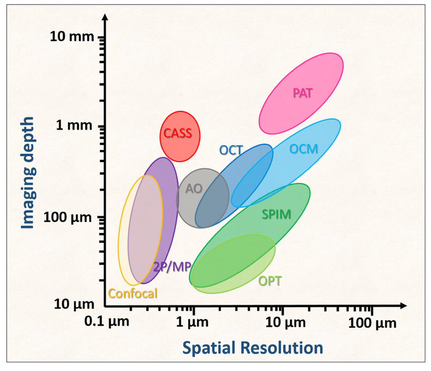
We develop super-depth optical methodologies that capture the full response of scattering media across space, momentum, and time. With that level of detail, the inverse problem of scattering becomes tractable at the microscopic level of individual scattering events.
The payoff: super-depth imaging at microscopic resolution — for both elastic and inelastic scattering — and light-energy delivery two orders of magnitude beyond existing methods, with direct application to biology, medicine, and semiconductor inspection.
Biological tissue scatters light. A photon launched into a mouse brain quickly loses its directionality — the signal we want drowns in a sea of multiply-scattered noise. Conventional microscopes stop working at a few hundred micrometers below the surface.
We build a different kind of microscope. Instead of collecting intensity, we record the full reflection matrix — the complex-valued map between every input and output optical mode. With this matrix in hand, the inverse problem of scattering becomes tractable: we can computationally undo aberrations, reject multiply-scattered photons, and recover images with diffraction-limited resolution.
Over the past decade, we have systematically progressed from low- to high-order inverse scattering, developing a family of reflection-matrix methods — CASS, CLASS, conjugate CLASS, and most recently the tracing of multiple scattering trajectories.
Optical microscopy loses resolving power deep in tissue because multiply-scattered waves dominate over the target's single-scattered signal. We developed an approach that maintains full optical resolution inside scattering media by combining time-gated detection with spatial input–output correlation to identify reflected waves that conserve in-plane momentum — the signature of single scattering.
A superradiance-like collective accumulation of single-scattering (CASS) waves enhanced the single-scattering signal over the multiple-scattering background by more than three orders of magnitude, enabling imaging at a depth of 11.5 times the scattering mean free path with near-diffraction-limited 1.5 μm resolution.
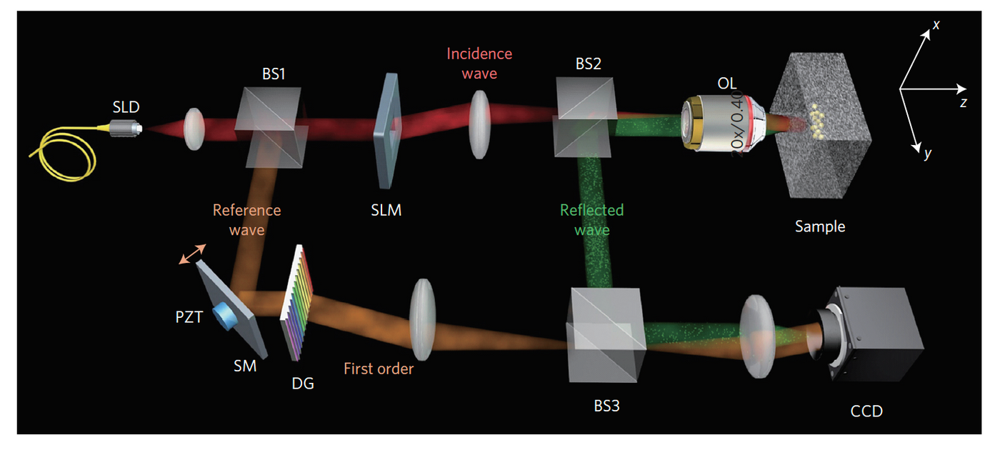
Thick tissue gives rise to both multiple scattering and aberrations of the remaining signal. We developed an optical coherence imaging method — CLASS — that separately identifies the aberrations of waves incident to and reflected from the sample, and eliminates them even in the presence of multiple scattering.
By recording the time-gated complex-field reflection matrix over many illumination channels and performing closed-loop optimization for both the forward and phase-conjugation processes, we enhanced the Strehl ratio by more than 500-fold — an order of magnitude beyond conventional adaptive optics — achieving 600-nm spatial resolution at depths up to seven scattering mean free paths.
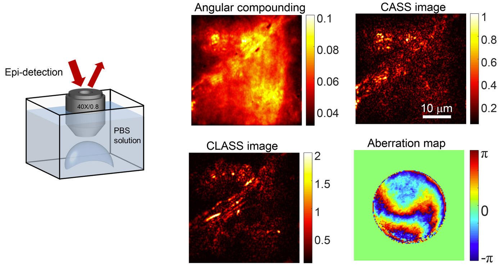
We built a high-speed reflection-matrix microscope at a 1.3-μm wavelength to reduce tissue scattering and aberration, and developed a computational conjugate adaptive-optics algorithm tailored to the recorded reflection matrix, optimally compensating for skull aberrations.
The system enabled label-free longitudinal imaging of cortical myelin through an intact mouse skull. Myelination processes in the same mice were tracked from 3 to 10 postnatal weeks down to cortical layer 4 with 0.79-μm spatial resolution, opening direct optical access to myelination's role in learning, memory, and brain disorders.
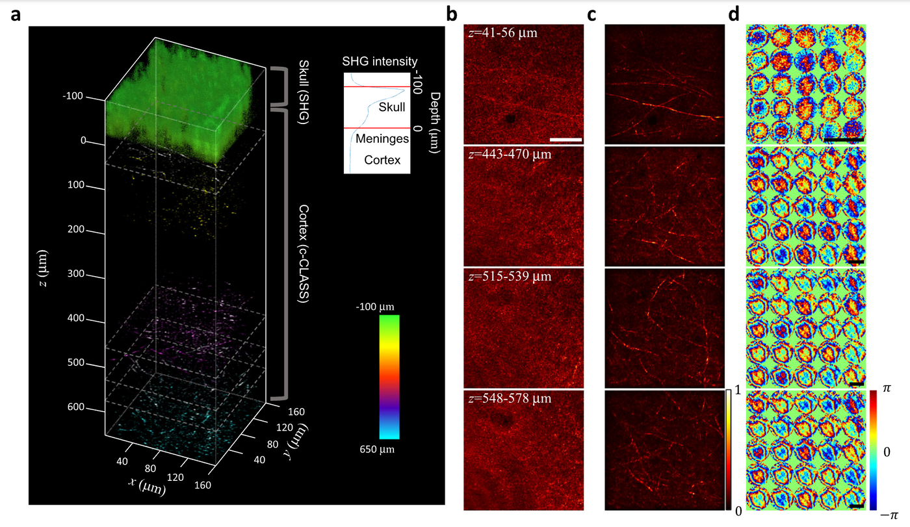
We developed a method to trace multiple-scattering trajectories in situ and convert them into signal waves for imaging targets embedded within a scattering medium. The measured reflection matrix is used to find a stack of phase plates that generates similar wave trajectories as the original scattering medium.
With this high-order inverse-scattering solution, we demonstrated in vivo through-skull imaging of a mature mouse — a milestone in deep-tissue optical imaging, as it is the first time multiply-scattered waves have been harnessed for microscopic image formation of an embedded object.
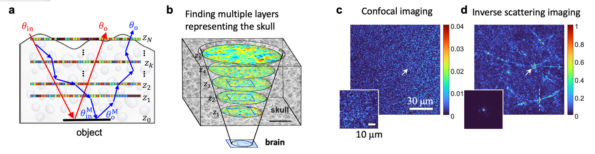
A conventional endoscope needs a lens at its tip. That limits how thin it can be. If you want to image inside the brain of a living mouse — through a capillary, around a corner — the lens itself is the problem.
We take the lens away. A multimode optical fiber can carry thousands of spatial modes in a package hundreds of micrometers thin. Scrambled at the output, yes — but the scrambling is deterministic. We measure the transmission matrix of the fiber once, and from then on we can project arbitrary focused beams from its distal tip and reconstruct full microscopic images.
The trend in modern endoscopy is microscopic resolution in probes thinner than a millimeter — so-called endomicroscopes for minimally invasive investigation. Conventional GRIN lenses or image-fiber bundles set the lower limit on probe diameter.
We used multimode optical fibers as imaging probes, pushing probe diameters even smaller. Although a multimode fiber distorts image information through mode dispersion, bending, and twisting, we measured the transmission matrix of the fiber to recover the original image — an approach that in principle allows any light-guiding medium to serve as an endoscopic probe.
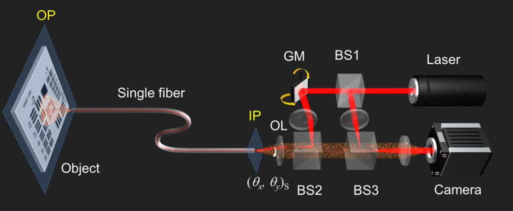
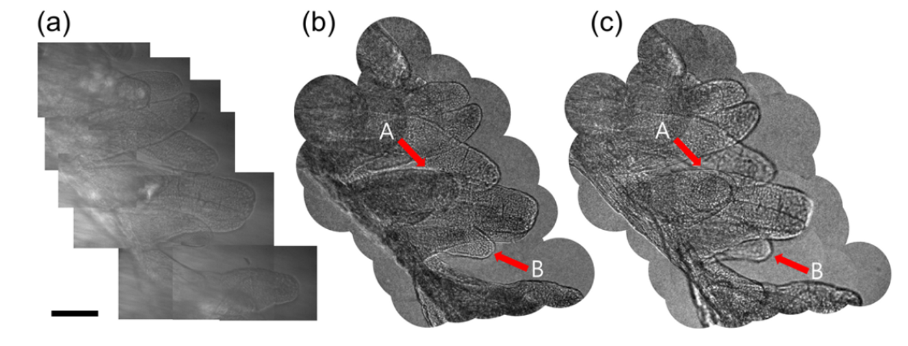
Ultrathin lensless fiber endoscopes offer minimally invasive investigation, but most operate as a rigid type due to the need for prior calibration of the fiber probe. Most also work in fluorescence mode rather than label-free imaging, limiting general medical diagnosis.
We reported a fully flexible ultrathin fiber endoscope that takes 3D holographic images of unstained tissues at 0.85-μm spatial resolution. Using a bare fiber bundle as thin as 200-μm diameter, we designed a lensless Fourier holographic imaging configuration to selectively detect weak reflections from biological tissues — a critical step for label-free endoscopic reflectance imaging — and developed a calibration-free reconstruction algorithm that images through narrow, curved passages regardless of fiber bending.
We demonstrated endoscopic reflectance imaging of unstained rat intestine tissues that are completely invisible to conventional endoscopes.
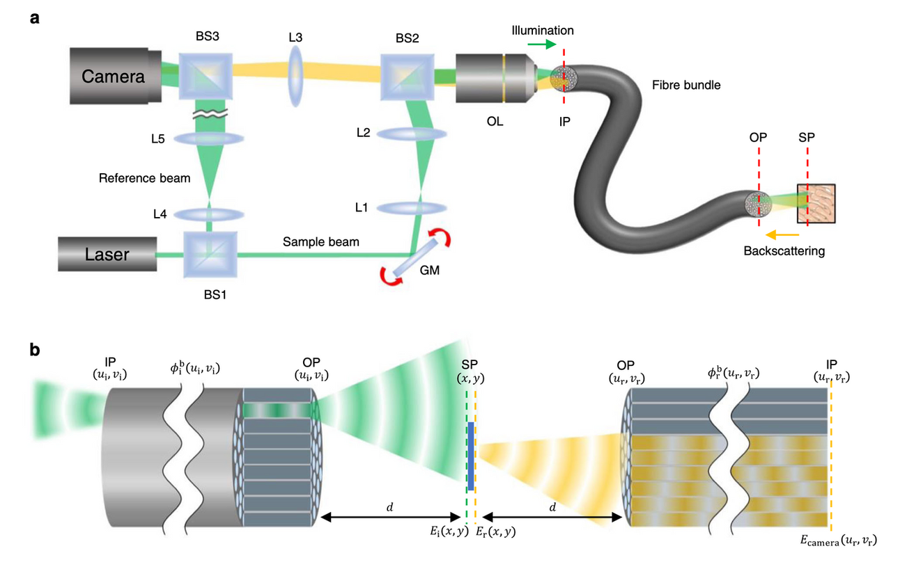
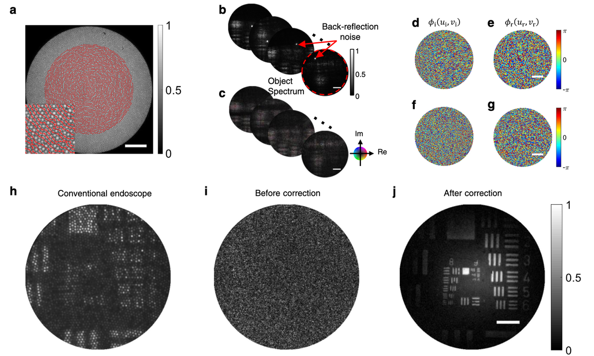
Before we can use scattered light for imaging, we have to understand it. What are the fundamental limits? How does energy flow through a disordered medium? Can we design waveforms that punch through opacity rather than be absorbed by it?
We study the physics of multiple light scattering: transmission eigenchannels that concentrate energy deep inside opaque materials, time-gated control of multiply-scattered photons, and the scattering tensor of disordered nonlinear media, where wave mixing rewrites the rules.
Disorder, properly exploited, is a resource rather than a limitation.
Complex media — random nanostructures, biological tissues — induce multiple scattering that attenuates energy transmission. Yet even in a highly disordered medium, specific modes called transmission eigenchannels exist, analogous to resonator modes in linear cavities, and carry extraordinarily high transmission.
We experimentally identify the transmission eigenchannels of any given scattering medium by measuring its transmission matrix, and couple light into individual eigenchannels via wavefront shaping. In early studies we showed that an eigenchannel transports 3.99× more energy than uncontrolled waves. This opens new avenues for enhanced light-energy delivery into biological tissues and for controlling the lasing threshold in random lasers.
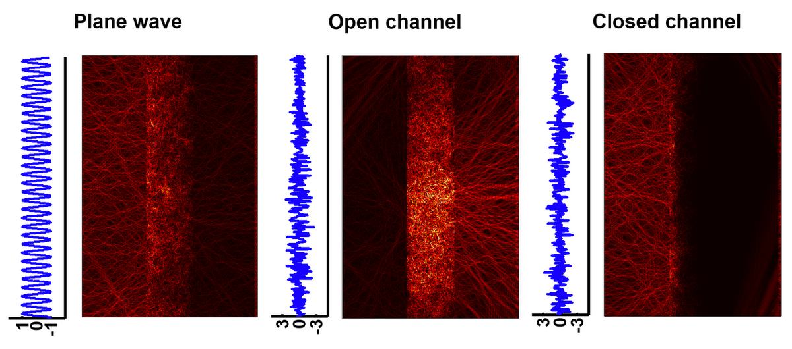
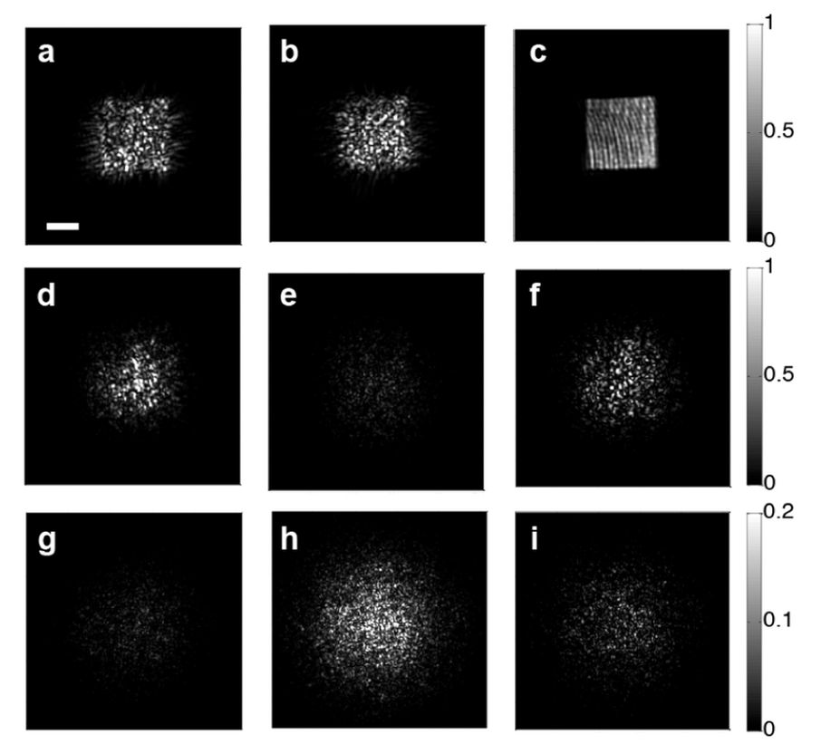
A complex scattering medium can spatially mix incoming waves through numerous randomly interconnected channels, acting as a unique linear optical operator. We developed methods to measure the transfer function of such media, enabling their use as effective — even super-resolving — scattering lenses (PRL 2011).
Most recently, we extended this framework to nonlinear scattering media, demonstrating that a disordered nonlinear medium can be treated as a highly scalable nonlinear optical operator — with applications in optical encryption and machine learning.
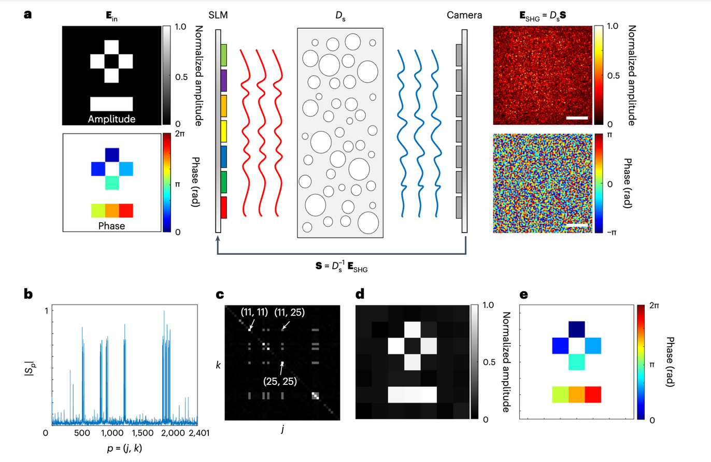
We work with biologists, clinicians, and semiconductor engineers on imaging problems that conventional microscopes cannot reach. If you have a sample that scatters, or a material that hides its internal structure from visible light, we would like to hear from you.
Get in touch